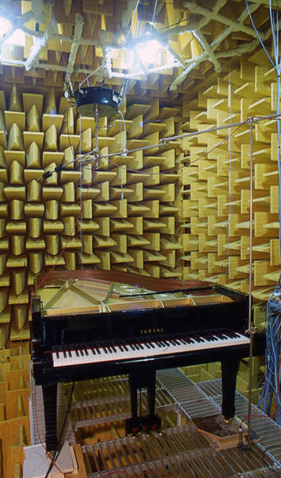
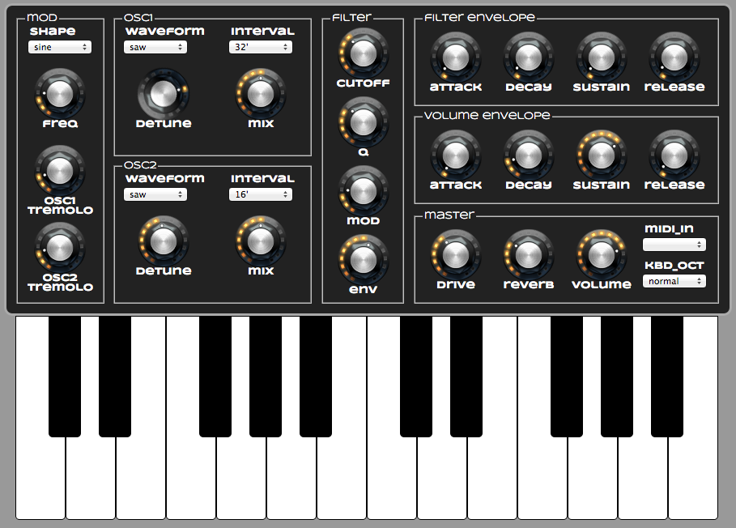
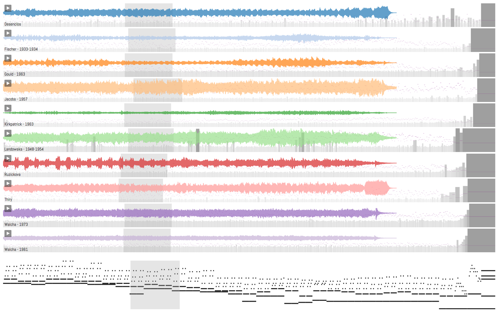

class: center, middle # Web Audio Now! Best of Web - Paris, 5 Juin 2015 - 15h00 Samuel Goldszmidt ([@ouhouhsami](https://twitter.com/ouhouhsami)) & Norbert Schnell ([@norbertschnell](https://twitter.com/norbertschnell)) - Ircam ??? SG : Développeur Web NS : Chercheur, Designer son et interaction --- # Plan 1. Ircam → Web Audio 2. Web Audio technologies, standards et faits 3. Ircam Web Audio librairies et framework --- layout: true # Ircam → Web Audio --- --- ### Institut de Recherche et de Coordination Acoustique/Musique <img src="media/img/ircam.jpg" height=200px /> <img src="media/img/espro.jpg" height=200px />  Créé en 1977 par Pierre Boulez, associé au Centre Pompidou <br> Financement principal : Ministère de la Culture et de la Communication Un lieu qui réunit des **musiciens**, des **chercheurs**, des **ingénieurs** <br> dans le but de **renouveller l'expression musicale** contemporaine <br> à travers la **science** et la **technologie**. 3 départements : R&D, Création, Médiation ??? Un lieu qui réunit des **musiciens**, des **chercheurs**, des **ingénieurs** dans le but de **renouveller l'expression musicale** contemporaine à travers la **science** et la **technologie** et en abordant la création musicale comme un objet de recherche singulier. --- **Audio** et musique au cœur des problématiques <br> **Web** utilisé pour la dissémination <img src='./media/img/medias.ircam.fr.png' height=200px/> 2 projets ANR de recherche utilisant **technologies** et **standards** Web Audio : * [WAVE](http://wave.ircam.fr) (Web Audio Visualisation/Edition) 2012/2015 * [CoSiMa](http://cosima.ircam.fr) (Collaborative Situated Media, N. Schnell) 2013/2016 Organisation de la 1<sup>ère</sup> Web Audio Conference [WAC](http://wac.ircam.fr/program.html) Janvier 2015 avec Mozilla et l'Audio Working Group du W3C ??? Audio et Musique, au cœur des problématiques Ircam : 7 équipes de recherche : Acoustique instrumentale, Espaces acoustiques et cognitifs, Perception et design sonores, Analyse & synthèse des sons, Représentations musicales, Analyse des pratiques musicales, Interaction son musique mouvement Web : dissémination des savoir scientifiques, des base de données de compositeurs, d'œuvres, et, des outils pour la musicologie numérique. Développement d'outils d'écoute actives (projet Ecoutes signées) Comment les compositeurs, interprètes ... écoutent. Exemple prototype communication Flash <=> Max Et avec Norbert on a décidé de réunir les deux. * "Web Audio" véritablement émergent pour des applications exigentes * Accessible sur (quasi) tous les périphériques connectés de dernière génération #### Pourquoi transférer des savoirs, des technologies, des algorithmes de MAO et d'interactions de l'Ircam vers la plateforme Web ? * 3 000 000 000 d'utilisateurs - s'adresser au plus grand nombre * *Browser As An OS*, pas d'installation - "TTM" minimal * Plateforme partagée, multi-utilisateurs, temps réel et multimédia * Nouveaux champs d'expérimentation et de recherche *Les* technologies Web Audio sont disponibles et accessible à tous ex. Word → Google Doc et retours utilisateurs --- layout: true # Web Audio technologies, standards et faits --- --- ## Histoire courte ~ 1995 : <bgsound> <embed> <applet> "l'équivalent <blink> pour le son" <br> ~ 1997 : Flash - player et Flash Media Server <br> ~ 2008 : HTML5 <audio> <br> ~ A partir de 2010 : Web Audio API ET liés au Web Audio : WebSocket API, WebRTC (getUserMedia), Web Midi API, MediaStream Recording, Audio output devices API, Geolocation API, Device Orientation et Device Motion API, Presentation API ... ??? * 1995 : <blink> midifile et protocoles propriétaires (RTP, RTSP) * 1997 : côté client avec le plugin et côté serveur avec FMS et octobre 2008 Sound API dans Flash pour faire du traitement audio, minimal * 2008 : HTML5 <audio> * 2010 : HTTP streaming (DASH), WebRTC et WebSockets pour l'échange de données, Wep Audio API (première implémentation Chrome 2011). Web Audio API disponible sur Edge 20 ans après la première possibilité de lire un son dans le navigateur, les standards proposent un ensemble de fonctionnalités primitives pour créer des applications audio temps réel ou non sur le web. Même s'il y a encore des choses qui manquent et à améliorer. --- ## Web Audio API (1/3) * API JavaScript de haut-niveau permettant le traitement et la synthèse audio dans des applications web * Paradigme : un graphe de routage du signal audio construit à l'aide d'`AudioNodes`. * L'implémentation sous-jacente est en C/C++ mais le traitement directement en JavaScript est possible. ??? La balise audio (HTML5) permet le streaming et le playback audio simple dans les navigateurs récents sans avoir recours à Flash ou QuickTime. Mais ce n'est pas suffisant pour les jeux, les applications audio interactives (séquenceurs audios, plugin d'effets et synthétiseurs) ... et tout ce que l'on peut imaginer comme application musicale dans un environment massivement multimédia, multi-utilisateurs ! --- ## Web Audio API (2/3) * Lecture à l'échantillon sonore près * Intégration avec <audio>, <video>, getUserMedia et WebRTC * Spatialisation du son * Moteur de convolution * Filtres, *Waveshaper*, Oscillateurs * Paramètres audios `AudioParam` * Analyses dans les domaines temporel et fréquenciel ??? Synthèse par distorsion non linéaire * Analyses dans les domaines temporel et fréquenciel *pour la visualisation seulement à l'heure actuelle* --- ## Web Audio API (3/3) * `AudioContext` * `AudioNode` * Sortie uniquement : `AudioBufferSourceNode`, `MediaElementAudioSourceNode`, `MediaStreamAudioSourceNode`, `OscillatorNode` * Entrée uniquement : `AudioDestinationNode`, `MediaStreamAudioDestinationNode` * Entrée & Sortie : `GainNode`, `DelayNode`, `BiquadFilterNode`, `DynamicsCompressorNode`, `WaveShaperNode`, `PannerNode`, `StereoPannerNode`, `ConvolverNode`, `AnalyserNode`, `ChannelSplitterNode`, `ChannelMergerNode`, `ScriptProcessorNode` <small>(obsolète)</small>, `AudioWorkerNode` * `AudioParam` ??? AudioContext contient * le graph du signal audio <small>(connections entre AudioNodes)</small> * les factory pour créer des AudioNodes <small>(GainNode, PannerNode ...)</small> * la destination <small>(la sortie audio)</small> * le currentTime <small>(utile pour ordonnancer les évènements)</small> * le decodeAudioData AudioParam * contrôle un aspect individuel du fonctionnement d'un AudioNode, comme le volume * peut être a-rate <small>valeur pour chaque échantillon d'un block</small> ou k-rate <small>valeur utilisée pour l'ensemble du block</small> * Méthodes: setValueAtTime(), linearRampToValueAtTime(), exponentialRampToValueAtTime(), setTargetAtTime(), setValueCurveAtTime() * peut être connecté à un AudioNode: AudioNode.connect(AudioParam) <small>(en plus de AudioNode.connect(AudioNode))</small>, usage type les LFO --- <div> <button class="keyboard" data-frequency="440">A</button> <button class="keyboard" data-frequency="466.16">A#</button> <button class="keyboard" data-frequency="493.88">B</button> <button class="keyboard" data-frequency="523.25">C</button> <button class="keyboard" data-frequency="554.37">C#</button> <button class="keyboard" data-frequency="587.33">D</button> <button class="keyboard" data-frequency="622.25">D#</button> <button class="keyboard" data-frequency="659.25">E</button> <button class="keyboard" data-frequency="698.46">F</button> <button class="keyboard" data-frequency="739.99">F#</button> <button class="keyboard" data-frequency="783.99">G</button> <button class="keyboard" data-frequency="830.61">G#</button> </div> <div> <div style="float:left"> <label><small>VCO Type</small></label> <br> <select class="vocType"> <option>sine</option> <option>square</option> <option>sawtooth</option> <option>triangle</option> </select> </div> <div style="float:left"> <label><small>VCA Attack</small></label> <br> <input type="range" class="attack" min="0" max="1" step="0.001" value="0.025" /> </div> <div style="float:left"> <label><small>VCA Release</small></label> <br> <input type="range" class="release" min="0.001" max="1" step="0.001" value="0.08" /> </div> <div style="float:left"> <label><small>Filter Frequency</small></label> <br> <input type="range" class="filterFreq" min="0" max="1" step="0.01" value="1" /> </div> <div style="float:left"> <label><small>Filter Q</small></label> <br> <input type="range" class="filterQ" min="0" max="1" step="0.01" value="0" /> </div> </div> <div style="clear:both" ></div> ```javascript /* AudioContext */ var audioContext = new window.AudioContext(); /* VCO - Voltage Controlled Oscillator */ var vco = audioContext.createOscillator(); vco.type = 'sine'; vco.frequency.value = 0; vco.start(0); /* VCA - Voltage Controlled Amplifier */ var vca = audioContext.createGain(); vca.gain.value = 0; /* Filter */ var filter = audioContext.createBiquadFilter(); /* Connections */ vco.connect(vca); vca.connect(filter); filter.connect(audioContext.destination); function playNote(freq, time){ vca.gain.cancelScheduledValues(time); vca.gain.setValueAtTime(0, time); vca.gain.linearRampToValueAtTime(1, time + attackTime); vca.gain.linearRampToValueAtTime(0, time + attackTime + releaseTime); vco.frequency.value = freq; } ``` --- ## Exemples d'applications [<img src="./media/img/vocoder.png" height="220px" style="float:left;margin-right:10px" />](https://webaudiodemos.appspot.com/Vocoder/index.html) [](http://webaudiodemos.appspot.com/midi-synth/index.html) * Vocoder : getUserMedia + Web Audio API * Synthétiseur : Web Midi API + Web Audio API --- ## *Web Audio API vs. Native: Closing the Gap* Paul Adenot - Keynote WAC2015 * Le code natif a de bonnes **performances** et est **flexible** * Le code écrit avec la Web Audio API se **distribue facilement**, est **sûr** et est très **facile**. Propositions simples pour améliorer les performances Web Audio API : * AudioWorker * asm.js * SIMD.js Pour les mauvaises nouvelles (denormals, lock-free/wait-free, context-switch), [regardez la vidéo](http://medias.ircam.fr/x2af2f6). ??? browserify grâce au bac à sable de la plateforme web * AudioWorker : plus de frontière de thread à traverser comme les traitements audio et JavaScript seront sur le même thread * asm.js, langage intermédiaire constituant un sous-ensemble du langage Javascript, qui ne produit pas d'objet temporaire à passer au ramasse miette. * SIMD.js SIMD (Single Instruction Multiple Data) qui permet de faire des opérations sur des éléments multiples ensemble, et qui a des répercutions interessantes en terme de performance sur le traitement de buffer audio. * Pour les mauvaises nouvelles (denormals, lock-free/wait-free, context-switch), [regardez la vidéo](http://medias.ircam.fr/x2af2f6). --- layout: true # Ircam Web Audio librairies et framework --- --- ## waves.js Une librairie pour faciliter le développement d'applications Web Audio (projet WAVE) * UI : Affichage et édition de données temporelles * Audio : Moteur audio et ordonnanceur * LFO : Chaîne de traitement audio Documentation: [wavesjs.github.io](http://wavesjs.github.io) --- ## waves.js - UI Affichage et édition de données temporelles : `Waveform`, `Markers`, `Segments`, `BreakPointFunctions` (BPF) au sein d'une `Timeline` avec des possiblités de `Zoom`/`Move` et ajout de `Cursor` [waves.js UI](http://wavesjs.github.io/examples/01-ui-what-you-can-do-with-it.html) ??? Avec HTML5, de nouvelles API et de nouveau type d'input (color, range, number) Mais rien pour pour waveform et les timeline. Modulaire, commandé par les données, SVG --- ## waves.js - Audio * Moteurs, jouent l'audio : `PlayerEngine`, `GranularEngine`, `SegmentEngine` * Maîtres, contrôlent les moteurs : * `PlayControl`, *start - pause - stop - seek - speed ...* pour contrôler la lecture des moteurs audio * `Scheduler`, ordonnance/commande la lecture des moteurs audio * `Transport`, synchronise/coordonne la lecture de moteurs audio [waves.js Audio](http://wavesjs.github.io/audio/) ??? Moteurs : créent un buffer et le jouent --- ## waves.js - LFO <small>(en développement)</small> <img src="./media/img/lfo.png" height=140px/> LFO permet : * d'analyser et manipuler les données à travers une chaîne de traitement uniforme * d'encapsuler les algorithmes usuels avec une interface unifiée qui peut être partagée et réutilisée Applications : analyse/descripteurs/segmentation audio, analyse de données de captation de mouvement ??? LFO est une librairie qui propose une API qui formalise le traitement et l'analyse arbitraire de flux de données (ex. données audio, vidéo, capteurs). En normalisant le format des stream dans son entrée et sa sortie, --- <img src="./media/img/leroux.mvt4.png" width=80%/> ["Blocs Gigognes", analyse du 4e mouvement de *Voi(rex)* de P. Leroux](http://wave.ircam.fr/demo/projects/blocs-gigognes/) --- <img src="./media/img/webern.opus27.png" width=90%/> [Analyse *Opus 27* de Anton Webern par E. Ducreux](http://wave.ircam.fr/demo/projects/webern-opus-27/) --- <img src="./media/img/luna-park.aperghis.png" width=100%/> [Analyse *Luna Park* de Georges Aperghis par J.-F Trubert](http://wave.ircam.fr/demo/luna-park/) ---  ["Bachothèque" J.-S Bach](http://wave.ircam.fr/demo/projects/bachotheque/) --- ## Collective-Soundworks Un framework pour la création d'applications audio et multimédia collaboratives (projet CoSiMa) [Soundworks](http://github.com/collective-soundworks/soundworks) --- layout: true class: center, middle # Fin ---